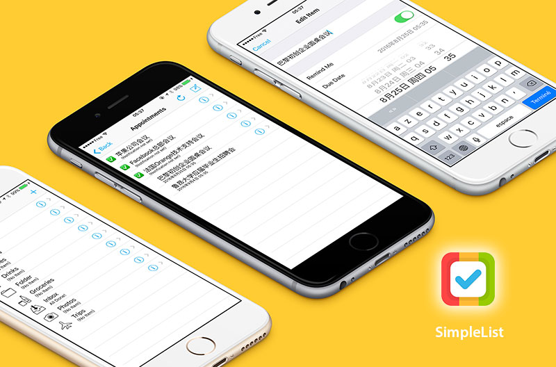
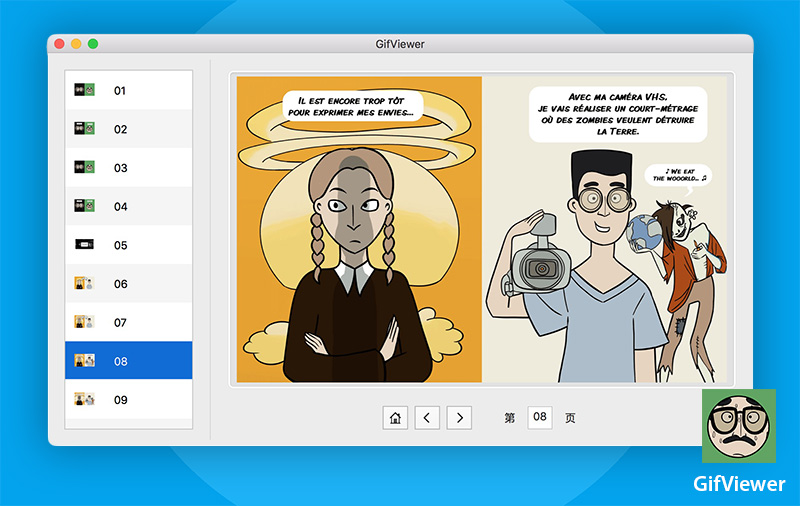

-
- Compétences
Compétences linguistiques
-
Français : langue de scolarisation pendant 6 ans, je suis aussi titulaire du DALF C2
lu, écrit, parlé couramment
regarder et transcrire sans sous-titre des vidéos de tout type
lire et comprendre avec aisance des documentations techniques
-
Anglais : langue seconde, lu et écrit avec facilité, certifié TOEIC
écrire des mails, communiquer avec les internautes sur Stack Overflow
regarder sans sous-titre des vidéos de type: cours MOOC, conférence développeur
lire et comprendre avec aisance des documentations techniques
Compétences informatiques
-
Environnement de développement
matrîse des outils tels que Xcode, Git, GitHub, Sublime Text, Visual Studio ... etc.
utilisations des systèmes d'exploitations: Mac OS X, Windows, Linux, ChromeOS, iOS, Android
-
Swift
aisance avec Swift, connaissances en UIKit, SpriteKit, MapKit
maîtrise de StoryBoard, Autolayout, apprentissage rapide des bibliothèques tierces
application du modèle MVC, de programmation orientée objet
-
HTML / CSS
capable de réaliser des sites statiques en HTML et CSS
esprit et goût critique d'un UI designer
-
Divers
connaissances en Objective-C, C#, Java, JavaScript, SQL ... etc.
connaissances en Jekyll, capable d'écrire en Markdown avec aisance
maîtirse des logiciels de traitement d'image/vidéo: Adobe Photoshop, Adobe Premiere Pro ... etc.
maîtrise des logiciels bureautiques: Microsoft Office, OpenOffice, Pages, Excel ... etc.
-
- Expériences
Projets personnels
-
Blog personnel: Theo's Blog ( 2016.8 ) Code Source
Un blog thème sous Jekyll avec un design simple, propre et élégant. Obtenu par modifier la partie HTML et CSS d'un thème Jykell avec maintennace du contenu du blog.

-
iOS Application: SimpleList ( 2016.7 ) Code Source
Une iOS application type "todolist" écrit "from scratch", appris avec des tutoriels qui proviennent du fameux site Ray Wenderlich.
 -
Mac Application: GifViewer ( 2016.6 ) Code Source
Une Mac Application qui groupe plusieurs fichiers gif pour les lire ensemble, inspiré par Ray Wenderlich.
 -
Mac Application: MenubarHide（ 2016.5 ） Code Source
Une minuscule Mac Application qui permet de cacher ou afficher les fichiers système de Mac.
Expériences professionnelles
-
Enseignant stagiaire de FLE ( 2015.2-4 )
Au Centre d'Accueil pour Demandeurs d'Asile de Rouen
assurer les cours pour les groupes débutants et intermédiaires
-
Automaticien/Informaticien stagiaire ( 2012.4-6 )
À la Manufacture Française des Pneumatiques Michelin dans son siège social à Clermont-Ferrand
programmer des automates pour assurer le fonctionnement d'un système de mesure par laser
faire des schémas électriques, écrire des documentations techniques en français et en anglais
-
Tuteur et Assistant technique/informatique ( 2009.7-8 )
Au JiangSu Education center for International Excahnges à l'alliance française de Nanjing en Chine
assister les enseigants français dans l'utilisation des outils numériques
-
- Parcours universitaires
-
Auto-apprentissage du développement iOS, Web ( 2015-2016 )
J'ai appris sur Internet des technologies telles que Swift, Xcode, HTML / CSS, JS, SQL ... etc.
-
Master Diffusion du français à l'Université de Rouen ( 2013-2015 )
-
Licence Science du Langage parcours Français Langue Étrangère à l'Université de Rouen ( 2012-2013 )
-
DUT Génie Électrique et Informatique Industrille à l'université de Lorraine ( 2010-2012 )
-
- Loisirs
-
IT Internet : développement mobile, Web, fontend, social marketing
-
Commerce : gestion de projet, études de marché, négociation, logistique, achat, import/export
-
Sport : tennis de table, jogging, natation

WU Siyuan
"Write the Code. Change the World."
-
- Informations
- WU Siyuan / Homme / 25 ans / Chinois / Permis B
- Dernier diplôme: Master Diffusion du français
Université de Rouen 2015
- Niveau de français: DALF C2
- Niveau d'anglais: TOEIC
- ID fréquemment utilisé: theowu
- Blog: theowu.tk
- GitHub: www.github.com/theowu
-
- Contact
- Tél: 06 38 67 02 66
- Mail: kermitiradennis@hotmail.com
- Wechat: 1184149091
-
- Poste recherché
- Développeur iOS junior Swift
-
- Tech. Points
SwiftObjective-CHTMLCSSJavaScriptJava
Développeur dynamique, doté d'une capacité d'apprentissage exceptionnelle, passionné par UX design, le développement Web et le développement mobile.
Actuellement à la recherche d'un poste de développeur junior iOS en Swift, j'espère avoir l'opportunité de travailler chez vous pour satisfaire vos exigeances!